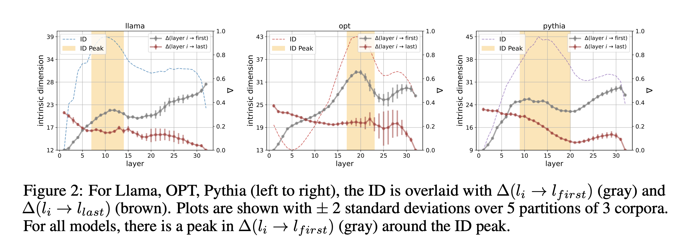

Transformer Stages
October 24, 2024 • Achyut Kowshik, Alex Loftus
Introduction
Large Language Models (LLMs) built on transformer architectures are thought to process information in a series of stages, each responsible for progressively refining their understanding of the input. These stages allow the model to transition from extracting basic features to forming complex, abstract representations that ultimately drive meaningful predictions. Understanding how these stages operate provides insights into the internal workings of the model during inference.
The three papers in this section each explore different aspects of these stages. The first paper, "The Remarkable Robustness of LLMs: Stages of Inference?", finds four characteristic stages in the progression of transformer language models, moving from detokenization and feature extraction to modeling the output probability distribution.
The second paper, "Emergence of a High-Dimensional Abstraction Phase in Language Transformers", uses a technique the authors developed previously to model the intrinsic dimensionality of a representation, e.g., the dimensionality of the manifold that it lives on, to discover a distinct phase change in the middle layers of transformers characterized by a spike in the intrinsic dimensionality.
The third paper, "Competition of Mechanisms: Tracing How Language Models Handle Facts and Counterfactuals", delves into how transformers manage conflicting information by balancing factual and counterfactual knowledge. It reveals that different parts of the model compete, depending on the context, to influence the final output. This interplay provides insight into how transformers decide which information should take precedence during inference, highlighting the roles played by different stages of the model.
The Remarkable Robustness of LLMs
In 2024, researchers discovered that large language models exhibit surprising resilience to architectural modifications. Through systematic experiments deleting and reordering layers, they found that models retain up to 95% of their original accuracy even after significant interventions.
The work, led by Vedang Lad, Wes Gurnee, and Max Tegmark at MIT, studied five state-of-the-art language models ranging from 6.5 to 8 billion parameters. Their investigation revealed four universal stages of inference that characterize transformer processing.
The stages progress from early layers that integrate local context to final layers that refine predictions:
1. Detokenization: In the initial layers, the model transforms raw token representations into coherent entities. This stage proves highly sensitive to layer deletion, suggesting it performs essential contextualization.
2. Feature Engineering: The early-to-middle layers build feature representations through attention-heavy computation. This phase shows remarkable robustness to both deletion and reordering of layers.
3. Prediction Ensembling: The middle-to-late layers mark a transition to MLP-heavy computation, where semantic features convert into concrete next-token predictions through specialized components.
4. Residual Sharpening: The final layers refine predictions by suppressing irrelevant features and calibrating confidence. Like the first stage, these layers prove sensitive to modification.
The researchers traced this robustness to the residual connections in transformer architectures. These connections allow models to form ensembles of relatively shallow computational paths, avoiding strong dependencies on any single layer.
To quantify the robustness, they performed two types of interventions across layers:
- Layer Deletion: Removes individual layers while preserving residual connections.
- Layer Swapping: Exchanges the order of adjacent layers.
The middle layers prove remarkably robust to both interventions:

The paper concludes with two case studies: one on attention heads responsible for capturing the context of a token for appropriate prediction (contributing to the detokenization and feature engineering stages) and a second providing evidence of an ensembling effect in prediction and supression neurons (contributing to the prediction ensembling and residual sharpening stages).
Emergence of a High-Dimensional Abstraction Phase in Language Transformers
Previous research has shown that language models compress their inputs onto low-dimensional manifolds. In this paper, research by Emily Cheng and colleagues at Universitat Pompeu Fabra revealed that this compression follows a distinctive pattern. They found a critical phase where representations temporarily expand to higher dimensionality - marking the transition to abstract linguistic processing.
This phase corresponds to a higher intrinsic dimensionality in the residual stream representations. The phase doesn't appear in the presence of random text and is nonexistent in untrained models; the layer in which it appears correlates with LM quality; and and the high-dimensional representations of different networks can predict each other - but they cannot predict either the initial representation of the input nor the representations in later layers.
To determine the dimensionality of the manifold, the researchers used a metric they had developed in a previous study called the Generalized Ratios Intrinsic Dimension Estimator (GRIDE):
Using GRIDE, they analyzed representation geometry across layers in five large language models. Despite the models' 4096-dimensional hidden states, they found that representations generally lie on manifolds of dimension O(10). The peak they found occured in the middle layers for all models:
The peak exhibits several key properties that suggest its functional importance: The high-dimensional phase emerges during training, disappears when processing random text, and enables cross-model prediction - indicating it reflects learned linguistic structure rather than architecture.
They also used a technique developed to quantify the change in information content between different representations based nearest neighbors rankings, which they called \( \Delta \):
The researchers used \( \Delta \) to compare the relative change in information content as representations passed through the model, demonstrating a peak that exactly coincided with the increase in intrinsic dimensionality. Using probing experiments, they showed that during this peak, surface-level features become less recoverable, while semantic and syntactic properties become more accessible. 
Critically, better language models show earlier and higher-dimensional peaks. This correlation suggests the high-dimensional phase plays an essential role in linguistic processing - providing an expanded representational space where abstract features can be computed before compression into predictions.
Competition of Mechanisms
This paper began as Francesco Ortu's Master's thesis, conducted under the joint guidance of MPI and Area Science Park. The team, including Zhijing Jin, Professors Alberto Cazzaniga, Bernhard Schölkopf, Diego Doimo, and Professor Mrinmaya Sachan, collaborated closely to develop and refine the technical ideas and experiments that underpin this work.
This paper addresses how transformer-based language models handle conflicting information— specifically, how they choose between factual and counterfactual knowledge during inference.
Macroscopic View: Layers and Token Positions
The authors analyzed how information flows through different layers and token positions to support either the factual or counterfactual mechanism. They found that, in the initial layers, factual information is primarily represented in the subject position, while counterfactual information is encoded in the attribute position. Later layers, especially the last position, are responsible for integrating this information to produce the final prediction, with the counterfactual mechanism often becoming dominant. This indicates that the competition between mechanisms becomes more pronounced in deeper layers, with the counterfactual mechanism winning out in most cases.
Intermediate View: Attribution to Attention and MLP Blocks
The study further broke down the contributions of attention and MLP blocks in each layer. The findings showed that attention blocks played a more significant role in the competition between factual and counterfactual mechanisms compared to MLP blocks. The attention blocks were the primary contributors to pushing the model towards the counterfactual mechanism, particularly in the later layers. In contrast, early layers had almost no influence on the competition, highlighting that both factual and counterfactual information is mainly developed and contrasted at later stages.
Microscopic View: Contribution of Individual Attention Heads
At a microscopic level, the authors examined individual attention heads to understand their roles in the competition of mechanisms. They found that a few specialized heads significantly contribute to either promoting the factual mechanism or enhancing the counterfactual mechanism. Interestingly, both types of heads tended to focus on the attribute position, but those promoting factual recall operated by suppressing the counterfactual token rather than directly enhancing the factual one. This suggests a nuanced approach where factual information is retained by indirectly weakening competing signals.
Intrinsic Intervention by Attention Modification
The authors performed an intrinsic intervention by modifying the attention values of specific attention heads to enhance the factual recall mechanism. By selectively up-weighting the attention values at certain positions, they were able to dramatically increase the model's factual recall from 4% to 50%. This modification only involved a few entries in the attention matrix (2 in GPT2-small and 3 in Pythia-6.9B), showing that small, targeted interventions can significantly alter the balance between competing mechanisms, thereby improving the reliability of factual responses.
Code Examples
Here are some notebooks from the authors of the papers we discussed above-For the first paper:
Rest of the code can be found on the authors' GithubFor the third paper: